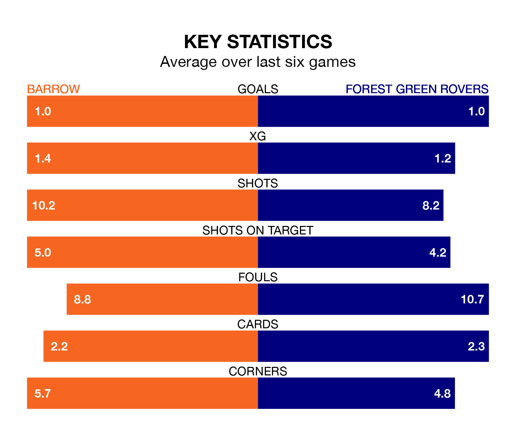

Struggling Barrow face Forest Green Rovers at the SO Legal Stadium on Tuesday looking to build on a win in their last league outing.
After securing all three points with a 0-2 victory over AFC Wimbledon on Saturday, the Bluebirds sit fourth in EFL League Two.
They travel to play a Forest Green side 24th in the standings, who lost in their last match, 4-0 against Mansfield Town.
Barrow are in mixed form in EFL League Two, with two wins and two draws from their last six games.
With no wins and three draws over that period, Forest Green's form is worse – they have taken three points from 18, compared to the Bluebirds' eight.
In the last 10 years, Barrow and Forest Green have played each other on nine occasions. They won three each, and they drew three times.
On average, the Bluebirds scored 1.6 goals and the Green 1.4 in those matches.
Their last meeting was on October 24, when Barrow won 2-0 away.
With Paul Farman between the sticks, the hosts can rely on one of the league's safest pair of hands. He has kept 10 clean sheets in his 29 appearances this season, and only two other 'keepers – Mansfield Town's Christy Pym and AFC Wimbledon's Alex Bass – have been able to prevent the opposition scoring on more occasions in EFL League Two.
In Rovers' net, James Belshaw has four clean sheets in 20 games. He has conceded a goal every 72 minutes, 20% more often than the 90 minutes between goals for Farman.
With 30 goals in 30 games so far this season, the Green are the league's second-lowest scorers with 1.0 goals per game. And they are conceding more than average, letting in 57 goals at a rate of 1.9 per game.
Barrow are also below average scorers, with 1.4 goals per game, compared to a league average of 1.5. They have conceded 1.0 goal per game.
Updated: 13:30 (UTC), 12/02/24